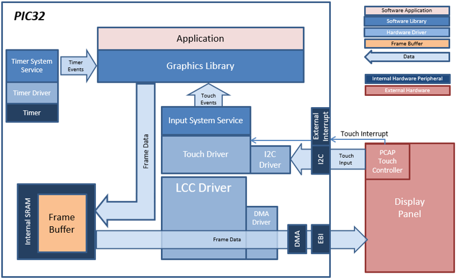
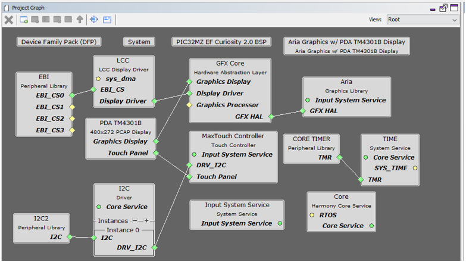
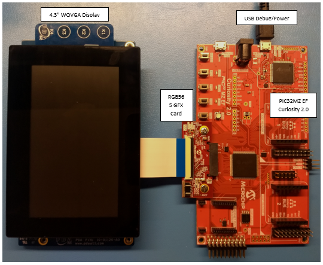

This configuration runs on the PIC32MZ EF Curiosity 2.0 with RGB565 GFX Interface board and WQVGA display. A 16-bit RGB565 frame buffer is stored in the internal SRAM, and the Low Cost Controller-less (LCC) display driver is used to manage the DMA that transfers the framebuffer contents to the display via the EBI peripheral.
User touch input on the display panel is received thru the PCAP capacitive touch controller, which sends a notification to the Touch Input Driver. The Touch Input Driver reads the touch information over I2C and sends the touch event to the Graphics Library thru the Input System Service.
Demonstration Features
• Aria Graphics Library
• Input system service and touch driver
• Time system service, timer-counter peripheral library and driver
• Low-Cost Controller-less (LCC) display driver
• 16-bit RGB565 color depth support (65535 unique colors)
• EBI peripheral library and driver
• I2C peripheral library and driver
• JPEG image stored in internal flash

The Project Graph diagram shows the Harmony components that are included in this application. Lines between components are drawn to satisfy components that depend on a capability that another component provides.
Adding the “PIC32MZ EF Curiosity 2.0 BSP” and “Aria Graphics w/ PDA TM4301B Display” Graphics Template component into the project graph will automatically add the components needed for a graphics project and resolve their dependencies. It will also configure the pins needed to drive the external peripherals like the display and the touch controller.
Set the Heap Size to 32768 bytes. The heap is set in Device & Project Configuration -> Project Configuration -> XC32 (Global Options) xc32-ld -> General -> Heap Size option in the “System” component.

The parent directory for this application is gfx/apps/aria_adventure. To build this application, open the gfx/apps/aria_adventure/firmware/legato_adv_mzef_cu_tm4301b.X project file in MPLABX IDE that corresponds to the hardware configuration.
The following table lists configuration properties:
|
Project Name |
BSP Used |
Graphics Template Used |
Description |
|
legato_adv_mzef_cu_tm4301b.X |
PIC32MZ EF Curiosity 2.0 |
Aria Graphics w/ PDA TM4301B Display |
PIC32MZ EF Curiosity 2.0 with RGB565 GFX Interface and 4.3” WQVGA PCAP Touch display |
 Important! Important! |
This application may contain custom code that is marked by the comments // START OF CUSTOM CODE ... and // END OF CUSTOM CODE. When using the MPLAB Harmony Configurator to regenerate the application code, use the "ALL" merging strategy and do not remove or replace the custom code. |
Configure the hardware as follows:
• Attach the RGB565 GFX Interface Card to the J601 connector on the PIC32MZ EF Curiosity 2.0 board.
• Connect the ribbon cable from the WQVGA display to the J2 connector on the RGB565 GFX Interface card.
• Connect a USB cable from the host computer to the DEBUG USB port on the PIC32MZ EF Curiosity 2.0 board. This USB connection is used for power, code download and debugging.
The final hardware setup should be:

Splash Screen
On start-up, the application will display a splash screen:

Main Screen
Subsequently, the demonstrations main mode will appear:

Without any touch interaction, the lamb sprite character remains stationary and loops in an idle animation. Pressing a finger on left or right half of the screen near one of the semi-transparent chevrons will trigger the lamb sprite to start moving towards that respective side of the screen. The longer the finger remain pressed, the “faster” the lamb will travel. Note the speed of the background increases as the lamb seemingly speeds up. The needle on the circular gauge will increase as the lamb travels. When the needle is in the yellow area, the lamb is in “super speed” mode. But if the needle touches the red section of the meter, the lamb becomes “exhausted”. It would fall and become dizzy before recovering. Touch interaction is disabled while the lamb takes a fall and is dizzy. A score is tallied based on how “far” the lamb has traveled before becoming exhausted. A high score is kept for as long as the application has power.
Parallax
The parallax feature is in full demonstration while the lamb is moving, as the speed of the clouds, the rolling hills and the pathway that the lamb is traveling on are all moving at different speed to create an illusion of movement and distance. The art of the background was chosen to be “loop-able”. The application keeps track of which part of the background scenery that is being shown and loops back to the start position seamlessly when the end is reached.
Animations
The animations used to support the lamb include:
- Idle Facing Right
- Idle Facing Left
- Walk/Run Facing Right
- Walk/Run Facing Left
- Super Speed Facing Right
- Super Speed Facing Left
- Fall Facing Right
- Fall Facing Left
- Dizzy Facing Right
- Dizzy Facing Left
The application contains a decision-tree that picks the right set of animation to play out based on the facing direction and the “speed” of the lamb movement on-screen.
Information Screen
Tapping the Microchip logo on the upper corner of the main screen will switch the application to the information screen.
The information screen serves as a screen to list out the demonstrated features of the demo. It also provides two features.
- The features are located on layer1. Sliding a finger up or down will cause the feature list to scroll up and down as if it’s on an invisible glass pane. The MPLAB Harmony logo that is rendered on layer0 is another demonstration of the real-time alpha-blending capability of the GLCD.
- Touching the Microchip logo will trigger no visible change on-screen, but will toggle on/off a hidden “Easter Egg” mode. When the hidden mode is enabled, after going back to the main screen, the lamb character can go into “super speed” mode in-definitely without succumbing to exhaustion.
|
MPLAB® Harmony Graphics Suite Applications
|